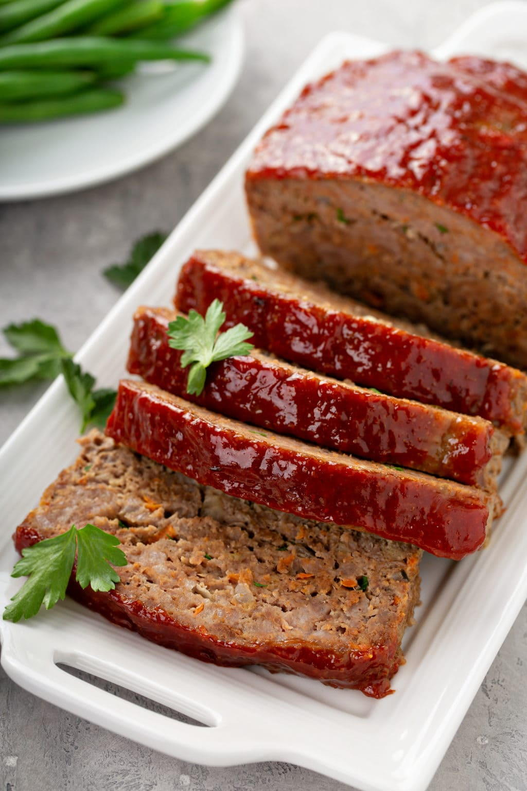

Meat Loaf
Meatloaf is a dish of ground meat that has been combined with other ingredients and formed into the shape of a loaf, then baked or smoked. The final shape is either hand-formed on a baking tray, or pan-formed by cooking it in a loaf pan
Ingredients
- 1 tablespoon butter
- ¼ cup minced onion
- 2 cloves garlic, minced
- 1 ½ teaspoons salt
- 1 ½ teaspoons freshly ground black pepper
- 2 pounds extra-lean ground beef
- 3 slices bread, toasted and crumbled
- 7 buttery round crackers, crushed
- 1 egg, lightly beaten
- 3 ½ tablespoons sour cream
- 1 ½ tablespoons Worcestershire sauce
- 1 (15 ounce) can tomato sauce, divided
- ¼ cup milk, or as needed (Optional)
- 3 tablespoons ketchup
Steps
- Preheat the oven to 350 degrees F (175 degrees C). Gather all ingredients.
- Melt butter in a skillet over medium heat, and cook onion and garlic until onion is soft and translucent, about 5 minutes. Remove from heat, and season with salt and pepper.
- Combine onion and garlic mixture, beef, crumbled bread, crushed crackers, egg, sour cream, Worcestershire sauce, and 1/2 can tomato sauce in a large bowl. Mix until well combined. Gradually stir in milk, 1 teaspoon at a time, until mixture is moist, but not soggy.
- Transfer the mixture to a 5x9-inch loaf pan.
- Bake uncovered in the preheated oven for 40 minutes. Increase oven temperature to 400 degrees F (200 degrees C). Continue baking 15 minutes, to an internal temperature of 160 degrees F (70 degrees C).
- Mix the remaining tomato sauce and ketchup in a small bowl. Pour over the top of the meatloaf, and continue baking for 10 minutes.
- Serve hot and enjoy!